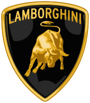

Automobili Lamborghini S.p.A. (Italian: [lamborˈɡiːni] is an Italian brand and manufacturer of luxury sports cars and SUVs based in Sant'Agata Bolognese and tractors Lamborghini Trattori in Pieve di Cento, Italy. The company is owned by the Volkswagen Group through its subsidiary Audi. Ferruccio Lamborghini, an Italian manufacturing magnate, founded Automobili Ferruccio Lamborghini S.p.A. in 1963 to compete with established marques, including Ferrari. The company gained wide acclaim in 1966 for the Miura sports coupé, which established rear mid-engine, rear wheel drive as the standard layout for high-performance cars of the era. Lamborghini grew rapidly during its first decade, but sales plunged in the wake of the 1973 worldwide financial downturn and the oil crisis. The firm's ownership changed three times after 1973, including a bankruptcy in 1978. American Chrysler Corporation took control of Lamborghini in 1987 and sold it to Malaysian investment group Mycom Setdco and Indonesian group V'Power Corporation in 1994. In 1998, Mycom Setdco and V'Power sold Lamborghini to the Volkswagen Group where it was placed under the control of the group's Audi division. New products and model lines were introduced to the brand's portfolio and brought to the market and saw an increased productivity for the brand. In the late 2000s, during the worldwide financial crisis and the subsequent economic crisis, Lamborghini's sales saw a drop of nearly 50 percent. Lamborghini produces sports cars and V12 engines for offshore powerboat racing. Lamborghini currently produces the V12-powered Aventador and the V10-powered Huracán along with the Urus SUV powered by a twin-turbo V8 engine.
Model Name |
Year of |
Top Speed |
Photo |
To Know More |
|---|---|---|---|---|
Lamborghini 350-GT |
1964-1966 | 254 km/h | Lamborghini 350-GT | |
Lamborghini 400-GT |
1966-1968 | 249 km/h | Lamborghini 400-GT | |
Lamborghini Miura |
1966-1972 | 290 km/h | Lamborghini Miura | |
Lamborghini Countach |
1974-1990 | 254 km/h | Lamborghini Countach | |
Lamborghini Diablo |
1990-2001 | 330 km/h | Lamborghini diablo | |
Lamborghini Murcielago |
2001-2010 | 330 km/h | Lamborghini Murcielago | |
Lamborghini Gallardo |
2003-2013 | 309 km/h | Lamborghini Gallardo |
Click Hereto reach to the official website of Lamborghini